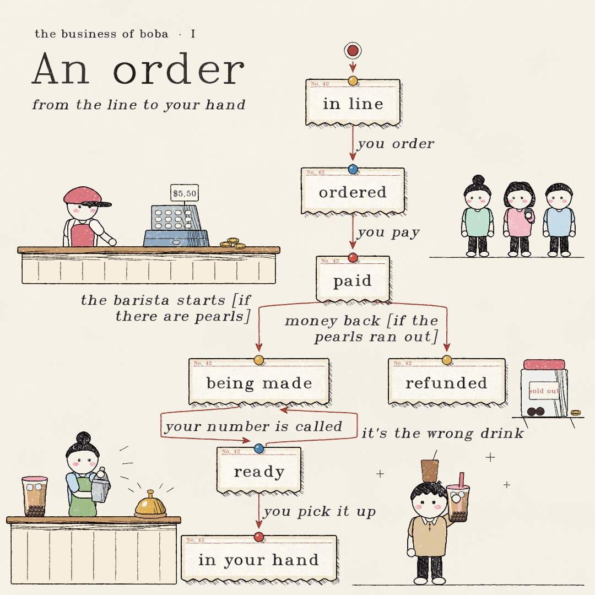

![Pen and coloured pencil drawing titled An order, from the line to your hand. The statechart is drawn as paper order tickets pinned up with coloured pushpins and joined by red thread: in line; you order, to ordered; you pay, to paid. From paid, the barista starts if there are pearls, to being made, or money back if the pearls ran out, to refunded. From being made, your number is called, to ready. From ready, it is the wrong drink goes back to being made, and you pick it up leads to in your hand. Around the chart: three customers waiting in line, a cashier at a counter with a till showing 5.50 and coins, a barista shaking a drink beside a service bell and a finished cup, a jar of pearls labelled sold out with a coin on a shelf, and a person with short wavy black hair, a beige polo and an iced coffee on their head holding up a cup of boba milk tea.](img/order.jpg)
![Pen and coloured pencil drawing titled A day, at the shop, 7 am to 9 pm. The statechart is drawn as a shop front. Closed, getting ready and closing up are wooden signs. Open is the shop window under a striped awning, with quiet, busy and a rush as notes taped to the glass. At 7 am, closed goes to getting ready; tea and pearls ready leads into open, to quiet; people come in, to busy; school is out, to a rush; it calms down, back to quiet; at 9 pm, if quiet, to closing up; till counted, back to closed. Around the chart: a sunrise, a kettle and a pot of pearls on a stove on a shelf, a moon and stars, a mop in a bucket, a morning glory vine and a planter of flowers under the window.](img/day.jpg)
![Pen and coloured pencil drawing titled Two at once, the barista and the pot. Under a menu board, the statechart shows two regions side by side inside a frame marked at the same time. The barista: barista free; an order comes in, unless cooking pearls, to making a drink; shaken and sealed, to calling a number; picked up, back to barista free. The pot: full of pearls; pearls run low, to running low; a new batch, when barista free, to cooking pearls; chewy again, back to full of pearls. Each condition is coloured like the region it names. Below, a barista shakes a drink behind the counter beside two finished cups and a pager, and a pot of pearls and a kettle sit on a stove.](img/counter.jpg)
![Pen and coloured pencil drawing titled The pearl bug, TLC finds how old pearls get served. A card states the rule: never serve pearls more than 4 hours old. The statechart: just boiled; an hour passes, to chewy, where more hours pass; an hour passes, to getting firm; an hour passes, to too old, where a rush starts. From too old, thrown out leads to thrown out, and a new batch is boiled leads back to just boiled; but a cup is served in a rush leads to an old cup is served, which is stamped rule broken. The path TLC found, from just boiled through too old to the old cup, is traced in red. Around the chart: a ladybug, an hourglass, a magnifying glass over a cup of old pearls, a pot of pearls on a stove and a jar of old pearls.](img/bug.jpg)
I An order
TLC reached 13 states and 17 steps.
- Every drink being made, ready or handed over has been paid for.
PaidForEveryDrink - A refunded order has its money back.
RefundsGiveMoneyBack
---- MODULE Order ----
EXTENDS Naturals
VARIABLES order, paid, pearls, remakes
vars == <<order, paid, pearls, remakes>>
Init ==
/\ order = "in line"
/\ paid = FALSE
/\ pearls = "plenty"
/\ remakes = 0
YouOrder ==
/\ order = "in line"
/\ order' = "ordered"
/\ UNCHANGED <<paid, pearls, remakes>>
YouPay ==
/\ order = "ordered"
/\ order' = "paid"
/\ paid' = TRUE
/\ UNCHANGED <<pearls, remakes>>
PearlsRunOut ==
/\ pearls = "plenty"
/\ order \in {"in line", "ordered", "paid"}
/\ pearls' = "out"
/\ UNCHANGED <<order, paid, remakes>>
BaristaStarts ==
/\ order = "paid"
/\ pearls = "plenty"
/\ order' = "being made"
/\ UNCHANGED <<paid, pearls, remakes>>
MoneyBack ==
/\ order = "paid"
/\ pearls = "out"
/\ order' = "refunded"
/\ paid' = FALSE
/\ UNCHANGED <<pearls, remakes>>
NumberCalled ==
/\ order = "being made"
/\ order' = "ready"
/\ UNCHANGED <<paid, pearls, remakes>>
WrongDrink ==
/\ order = "ready"
/\ remakes < 1
/\ order' = "being made"
/\ remakes' = remakes + 1
/\ UNCHANGED <<paid, pearls>>
YouPickItUp ==
/\ order = "ready"
/\ order' = "in your hand"
/\ UNCHANGED <<paid, pearls, remakes>>
Done ==
/\ order \in {"in your hand", "refunded"}
/\ UNCHANGED vars
Next ==
\/ YouOrder \/ YouPay \/ PearlsRunOut \/ BaristaStarts \/ MoneyBack
\/ NumberCalled \/ WrongDrink \/ YouPickItUp \/ Done
Spec == Init /\ [][Next]_vars
TypeOK ==
/\ order \in {"in line", "ordered", "paid", "being made", "ready", "in your hand", "refunded"}
/\ paid \in BOOLEAN
/\ pearls \in {"plenty", "out"}
/\ remakes \in 0..1
PaidForEveryDrink == order \in {"being made", "ready", "in your hand"} => paid
RefundsGiveMoneyBack == order = "refunded" => ~paid
NoDrinkWithoutPearls == order = "being made" => pearls = "plenty" \/ remakes > 0
====export const title = "an order of boba";
export const state = (v) => v.order;
const STEPS = {
YouOrder: "you order",
YouPay: "you pay",
PearlsRunOut: "the pearls run out",
BaristaStarts: "the barista starts [if there are pearls]",
MoneyBack: "money back [if the pearls ran out]",
NumberCalled: "your number is called",
WrongDrink: "it's the wrong drink",
YouPickItUp: "you pick it up",
Done: "you drink it",
};
export const step = (action) => STEPS[action];---
title: "an order of boba"
config:
state:
rankSpacing: 26
nodeSpacing: 60
---
stateDiagram-v2
s0: in line
s1: ordered
s2: paid
s3: being made
s4: ready
s5: refunded
s6: in your hand
[*] --> s0
s0 --> s1: you order
s1 --> s2: you pay
s2 --> s3: the barista starts [if there are pearls]
s3 --> s4: your number is called
s2 --> s5: money back [if the pearls ran out]
s4 --> s3: it's the wrong drink
s4 --> s6: you pick it up